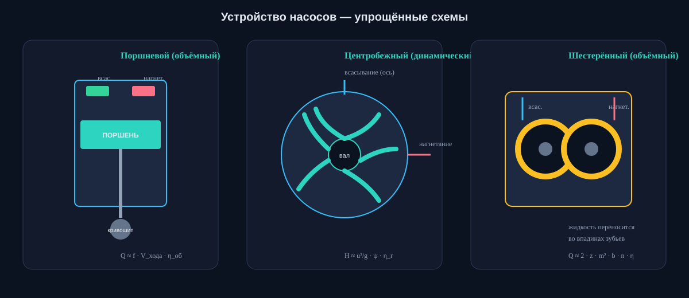

Насосы и компрессоры: от принципа действия до NPSH
Краткая, но содержательная выжимка по дисциплине: виды машин, устройство, рабочие параметры, компрессоры, интерактивные 3D и мини-тест. Материал написан своими словами на основе учебной литературы (Моргунов, Ухин, Кузнецов/Никифоров, методички УГНТУ) и общеинженерных источников.
Нажмите на тип насоса — появится краткая карточка. Подробности — в разделах «Динамические» и «Объёмные».
Ключ
Динамические
Рабочий орган разгоняет жидкость. Напор и расход связаны характеристикой Q–H: при росте сопротивления сети расход падает. При полностью закрытой задвижке на нагнетании насос (если не перегреется) продолжает крутиться, расход ≈ 0, напор — максимальный (напор холостого хода).
Ключ
Объёмные
Каждый оборот (или ход) вытесняет почти постоянный объём. Давление на нагнетании растёт, пока его не ограничит предохранительный клапан или прочность. Полностью перекрывать нагнетание без байпаса/клапана — опасно.
Схемы устройств
Упрощённые разрезы трёх «классических» машин — удобно держать перед глазами на лабе.

Раздел 2
Динамические насосы
Энергия от вала передаётся жидкости лопастями (или струёй рабочего агента). Подача плавная, конструкция часто проще в обслуживании, но нужен контроль кавитации и правильный подбор по сети.
Лопастной
Центробежный насос
вода / НПЗтеплосетимультиступенчатый
Жидкость входит в центр рабочего колеса (по оси), лопасти разгоняют её к периферии; в спиральном отводе кинетическая энергия частично превращается в давление. Многоступенчатые насосы ставят колёса последовательно для большого напора.
Плюсы
равномерная подача
высокий КПД на воде
компактность при большом Q
Минусы
плохой самозасос (часто нужна заливка)
падение КПД на вязких жидкостях
чувствителен к NPSH
Лопастной
Осевой (пропеллерный)
каналыциркуляциябольшой Q
Поток идёт вдоль оси вала, как у гребного винта. Даёт огромный расход при сравнительно малом напоре. Часто применяют на перекачке между резервуарами, в системах охлаждения, на насосных станциях каналов.
Плюсы
очень большой расход
компактный тракт
регулировка углом лопастей
Минусы
малый напор
узкий оптимальный режим
риск кавитации на входе
Лопастной
Вихревой (периферийный)
малый Qвысокий Hсамозасос
Жидкость многократно обменивается энергией с лопатками в боковом канале — напор заметно выше, чем у центробежного того же размера, но КПД ниже. Удобен для чистых маловязких жидкостей и как насос с хорошим самозасасыванием.
Плюсы
высокий напор
часто самозасасывающий
простая конструкция
Минусы
низкий КПД
боится абразива
малый расход
Струйный
Струйный насос (эжектор)
без движущихся частейскважинысмешение
Рабочая струя (вода, пар, газ) через сопло создаёт разрежение и подсасывает перекачиваемую среду; в камере смешения импульс передаётся потоку. Надёжен там, где нельзя ставить механику, но термодинамический КПД обычно невелик.
Плюсы
нет трущихся пар
работает с газожидкостью
простота и долговечность
Минусы
низкий КПД
нужен источник рабочей струи
шум / эрозия сопла
Практика: центробежный насос обычно пускают при закрытой (или почти закрытой) задвижке на нагнетании — чтобы снизить пусковой момент и не «улететь» по характеристике двигателя. После выхода на обороты задвижку открывают. Уточняйте по паспорту конкретной машины.
Раздел 3
Объёмные насосы
Подача определяется геометрическим объёмом камеры и частотой циклов. Подходят для высокого давления, вязких сред и точного дозирования. Обязателен предохранительный тракт.
Возвратно-поступательный
Поршневой / плунжерный
Поршень (или плунжер) изменяет объём цилиндра; клапаны всасывания и нагнетания открываются по перепаду давления. Плунжерные насосы дают очень высокие давления (гидроочистка, закачка реагентов). Подача пульсирующая — ставят демпферы.
Плюсы
высокий напор/давление
хороший КПД
работа с умеренной вязкостью
Минусы
пульсации
клапаны и уплотнения
габариты / масса
Роторный
Шестерённый
Две шестерни переносят жидкость во впадинах зубьев от всасывания к нагнетанию. Классика маслосистем, топливных и нефтяных перекачек малой/средней производительности. Жёсткие требования к чистоте и зазорам.
Плюсы
компактность
самозасос
простая механика
Минусы
шум
износ при абразиве
утечки через зазоры
Роторный
Винтовой
Один или несколько винтов образуют замкнутые полости, движущиеся вдоль оси. Отлично тянет вязкие нефти, эмульсии, иногда газожидкостные смеси. Подача относительно равномерная.
Плюсы
вязкие среды
малые пульсации
высокий КПД на нефти
Минусы
цена / точность изготовления
чувствительность к сухому ходу
ремонт сложнее
Роторный / мембранный
Пластинчатый и мембранный
Пластинчатый (шиберный) — пластины в роторе образуют камеры переменного объёма; часто в гидроприводе. Мембранный — диафрагма отделяет привод от жидкости: идеален для агрессивной химии и дозирования без утечек через уплотнение штока.
Плюсы
герметичность (мембрана)
дозирование
работа с химией
Минусы
ресурс мембраны
ограничение по давлению/температуре
пластинчатые боятся грязи
Раздел 4
Основные параметры и формулы
Без этих величин нельзя ни подобрать насос, ни защитить его от кавитации. Ниже — рабочие определения «для конспекта», а не дословные цитаты учебников.
Параметр
Обозначение
Смысл
Типичные единицы
Подача (расход)
Q
объём жидкости в единицу времени
м³/с, м³/ч, л/с
Напор
H
энергия, сообщаемая 1 Н жидкости, в метрах столба
м
Давление
p / Δp
часто удобнее напора: Δp = ρgH
Па, бар, МПа
Мощность
N
потребляемая / полезная
Вт, кВт
КПД
η
N_пол / N_подвед
— (0…1) или %
Частота вращения
n
обороты ротора
об/мин, с⁻¹
NPSH
NPSHr / NPSHa
запас над давлением насыщенных паров
м
Полезная мощность насоса
Nпол = ρ · g · Q · H → Nподвед = Nпол / η
Связь напора и перепада давления
H = Δp / (ρ · g)
Условие без кавитации
NPSHa ≥ NPSHr + запас (часто +0,5…1 м и более по нормам)
NPSH простыми словами
NPSHa (available) — сколько «запаса давления» реально есть на входе с учётом уровня жидкости, потерь во всасывающей линии и давления паров.
NPSHr (required) — сколько запаса требует сам насос (из каталога/испытаний), чтобы не кавитировать на данном режиме.
Если запас мал — пузырьки пара схлопываются у колеса, падает напор, растёт шум, разрушаются лопасти.
Законы подобия (лопастные)
При изменении частоты вращения n у геометрически подобного режима (приближённо):
Q₂/Q₁ = n₂/n₁ H₂/H₁ = (n₂/n₁)² N₂/N₁ = (n₂/n₁)³
Отсюда: чуть подняли обороты — мощность растёт кубически. Для диаметра колеса D есть аналогичные соотношения с D, D², D³/D⁵ — смотрите в курсе теории лопастных машин.
Характеристика Q–H и рабочая точка
Сеть (трубопровод + высота подъёма + местные сопротивления) имеет свою кривую Hсети(Q). Пересечение с характеристикой насоса Hнас(Q) — рабочая точка. Регулирование: задвижка (меняется сеть), частотный преобразователь (меняется характеристика насоса), смена диаметра колеса, параллельная/последовательная работа агрегатов.
Раздел 5
Компрессоры
Компрессор повышает давление газа. В отличие от насоса, плотность заметно меняется, важны температура, степень сжатия и охлаждение.
Объёмный
Поршневой компрессор
Классика мобильных и стационарных станций. Степень сжатия одной ступени ограничена температурой конца сжатия и объёмом вредного пространства. Многоступенчатое сжатие с охлаждением между ступенями снижает работу.
Объёмный
Винтовой компрессор
Два ротора образуют камеры, объём которых уменьшается вдоль оси. Равномерная подача, хорош для средних расходов. Бывает маслозаполненный и сухой.
Динамический
Центробежный компрессор
Как центробежный насос, но для газа: колесо + диффузор. Высокие обороты, большие расходы, применяется в ГТУ, ХТП, магистральном транспорте газа (часто многоступенчато).
Динамический
Осевой компрессор
Ступени «ротор–статор» вдоль оси. Очень большие расходы при умеренной степени сжатия на ступень — основа авиационных двигателей и крупных установок.
Степень сжатия
ε = pнагн / pвс
Мёртвый (вредный) объём
Объём в цилиндре поршневого компрессора, который остаётся в конце нагнетания. Расширение оставшегося газа при обратном ходе уменьшает объём свежего всасывания → падает производительность и объёмный КПД. Чем больше вредное пространство и степень сжатия, тем сильнее эффект.
Что помнить на экзамене
1) Газ сжимаем — охлаждение важно. 2) ε лимитирует температура и прочность. 3) Для высоких ε — несколько ступеней. 4) Производительность поршневого зависит от вредного пространства. 5) Динамические компрессоры чувствительны к режиму (помпаж!).
Раздел 6
3D-модели и симуляторы
Интерактивные модели открывайте в новой вкладке (часть сайтов блокирует iframe). Крутите, разбирайте потоки, сопоставляйте с конспектом.
Если встроенный просмотр пустой — это ограничение X-Frame-Options у внешнего сайта. Кнопка «Открыть» всегда работает.
То, что чаще всего «ломает мозг» на семинарах — и помогает запомнить предмет.
Парадокс закрытой задвижки
У центробежного насоса закрытая задвижка на нагнетании — штатный (осторожный) пусковой приём: расход мал, мощность часто даже меньше, чем в рабочей точке. У объёмного насоса та же ситуация — путь к разрыву корпуса или срабатыванию предохранительного клапана. Один жест — два мира физики.
Кавитация — «кипение без плиты»
Давление на входе падает ниже давления насыщенных паров — жидкость вскипает локально. Пузырьки схлопываются в зоне высокого давления и долбят металл микроударами. Насос «хрипит», напор проседает, колесо покрывается оспинами.
Парадокс вязкости
Кажется, что «чем гуще — тем насосу тяжелее» всегда. Для центробежного — да, резко падают Q, H и η. Для шестерённого/винтового вязкая нефть — родная среда: утечки через зазоры меньше, объёмный КПД может вырасти. Густота враг одним и союзник другим.
Мёртвый объём компрессора
Чем выше степень сжатия, тем сильнее вредное пространство «съедает» производительность: оставшийся газ расширяется и не пускает свежую порцию. Поэтому высокие давления делают ступенями, а не «одним ударом».
Парадокс «больше обороты — в три раза больше мощность»
По законам подобия N ~ n³. Разгон с 1500 до 3000 об/мин (×2) требует порядка ×8 мощности на валу (в идеализированной модели). Частотник — не «бесплатная крутилка», а смена всей энергетики машины и сети.
Напор — не «высота трубы»
H измеряется в метрах, но это удельная энергия. Напор 50 м на воде ≈ 5 бар, а на ртути тот же напор даст совсем другое давление, потому что ρ другая. Всегда держите в уме ρgH.
Парадокс параллельных насосов
«Поставим два одинаковых — получим двойной расход». Только если сеть «плоская» (мало сопротивления). На крутой сети прирост Q скромный: оба насоса упираются в одну и ту же высокую Hсети. Без расчёта характеристики станции сюрприз гарантирован.
Помпаж компрессора
У динамических компрессоров есть зона неустойчивости: расход слишком мал — поток срывается, давление «дышит», машина бьёт по подшипникам. Антипомпажная защита — не бюрократия, а выживание агрегата.
Раздел 8
Мини-тест
10 вопросов. После «Проверить» увидите результат и подсветку ответов.
0/10
Раздел 9
Литература и как искать
Список ориентирован на программу УГНТУ. Текст сайта — учебный парафраз, не замена первоисточникам.
Моргунов К. П. Насосы и насосные станции : учебное пособие. — СПб. : Лань, 2019. — 308 с.База по насосам и станциям; удобно брать через ЭБС «Лань».
Ухин Б. В. Гидравлические машины. Насосы, вентиляторы, компрессоры и гидропривод. — М. : ФОРУМ : ИНФРА-М, 2018. — 320 с.Широкий охват гидромашин, включая компрессоры и гидропривод.
Кузнецов Ю. В., Никифоров А. Г. Насосы, вентиляторы, компрессоры. — СПб. : Лань, 2020. — 304 с.Компактный курс по трём классам машин.
Миннивалеев Т. Н. (сост.) Насосы и компрессоры : учебно-методическое пособие… — Уфа : УГНТУ, 2024.Локальное издание: лабораторные и самостоятельные работы. Ищите на okt.rusoil.net.
Гаррис Н. А., Годовский Д. А. (сост.) УМП к курсовой работе «Насосы и компрессоры». — Уфа : УГНТУ, 2008.Требования к курсовой, схемы, оформление.
Дополнительно: Черкасский В. М. «Насосы, вентиляторы, компрессоры» (Энергоатомиздат, 1984); Никищенко С. Л. «Нефтегазопромысловое оборудование» (Ин-Фолио, 2008).Для углубления и нефтегазового уклона.
Где брать электронно: ЭБС «Лань», портал okt.rusoil.net (ресурсы УГНТУ), biti.mephi.ru и вузовские подписки. Для курсовой начинайте с методички УГНТУ — там критерии оформления и расчётные схемы.